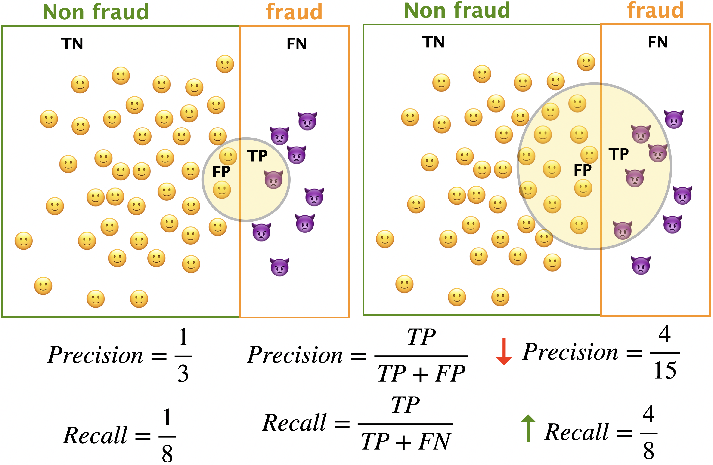
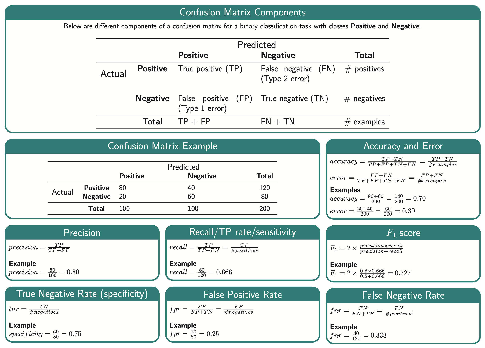

import os
import sys
sys.path.append(os.path.join(os.path.abspath(".."), "code"))
import IPython
import matplotlib.pyplot as plt
import mglearn
import numpy as np
import pandas as pd
from IPython.display import HTML, display
from plotting_functions import *
from sklearn.dummy import DummyClassifier
from sklearn.linear_model import LogisticRegression
from sklearn.model_selection import cross_val_score, cross_validate, train_test_split
from sklearn.pipeline import Pipeline, make_pipeline
from sklearn.preprocessing import StandardScaler
from utils import *
%matplotlib inline
pd.set_option("display.max_colwidth", 200)
from IPython.display import Image
---------------------------------------------------------------------------
ModuleNotFoundError Traceback (most recent call last)
Cell In[1], line 8
6 import IPython
7 import matplotlib.pyplot as plt
----> 8 import mglearn
9 import numpy as np
10 import pandas as pd
ModuleNotFoundError: No module named 'mglearn'
Lecture 9: Classification Metrics#
UBC 2023-24
Instructor: Varada Kolhatkar and Andrew Roth
Announcements#
HW4 is released.
Please make use of OH and tutorials to interact with the teaching team and ask your questions.
Midterm is coming up soon (Oct 26th).
Learning outcomes#
From this lecture, students are expected to be able to:
Explain why accuracy is not always the best metric in ML.
Explain components of a confusion matrix.
Define precision, recall, and f1-score and use them to evaluate different classifiers.
Broadly explain macro-average, weighted average.
Interpret and use precision-recall curves.
Explain average precision score.
Interpret and use ROC curves and ROC AUC using
scikit-learn.Identify whether there is class imbalance and whether you need to deal with it.
Explain and use
class_weightto deal with data imbalance.
Dataset for demonstration#
Let’s classify fraudulent and non-fraudulent transactions using Kaggle’s Credit Card Fraud Detection data set.
cc_df = pd.read_csv("../data/creditcard.csv", encoding="latin-1")
train_df, test_df = train_test_split(cc_df, test_size=0.3, random_state=111)
train_df.head()
| Time | V1 | V2 | V3 | V4 | V5 | V6 | V7 | V8 | V9 | ... | V21 | V22 | V23 | V24 | V25 | V26 | V27 | V28 | Amount | Class | |
|---|---|---|---|---|---|---|---|---|---|---|---|---|---|---|---|---|---|---|---|---|---|
| 64454 | 51150.0 | -3.538816 | 3.481893 | -1.827130 | -0.573050 | 2.644106 | -0.340988 | 2.102135 | -2.939006 | 2.578654 | ... | 0.530978 | -0.860677 | -0.201810 | -1.719747 | 0.729143 | -0.547993 | -0.023636 | -0.454966 | 1.00 | 0 |
| 37906 | 39163.0 | -0.363913 | 0.853399 | 1.648195 | 1.118934 | 0.100882 | 0.423852 | 0.472790 | -0.972440 | 0.033833 | ... | 0.687055 | -0.094586 | 0.121531 | 0.146830 | -0.944092 | -0.558564 | -0.186814 | -0.257103 | 18.49 | 0 |
| 79378 | 57994.0 | 1.193021 | -0.136714 | 0.622612 | 0.780864 | -0.823511 | -0.706444 | -0.206073 | -0.016918 | 0.781531 | ... | -0.310405 | -0.842028 | 0.085477 | 0.366005 | 0.254443 | 0.290002 | -0.036764 | 0.015039 | 23.74 | 0 |
| 245686 | 152859.0 | 1.604032 | -0.808208 | -1.594982 | 0.200475 | 0.502985 | 0.832370 | -0.034071 | 0.234040 | 0.550616 | ... | 0.519029 | 1.429217 | -0.139322 | -1.293663 | 0.037785 | 0.061206 | 0.005387 | -0.057296 | 156.52 | 0 |
| 60943 | 49575.0 | -2.669614 | -2.734385 | 0.662450 | -0.059077 | 3.346850 | -2.549682 | -1.430571 | -0.118450 | 0.469383 | ... | -0.228329 | -0.370643 | -0.211544 | -0.300837 | -1.174590 | 0.573818 | 0.388023 | 0.161782 | 57.50 | 0 |
5 rows × 31 columns
train_df.shape
(199364, 31)
EDA#
train_df.info()
<class 'pandas.core.frame.DataFrame'>
Index: 199364 entries, 64454 to 129900
Data columns (total 31 columns):
# Column Non-Null Count Dtype
--- ------ -------------- -----
0 Time 199364 non-null float64
1 V1 199364 non-null float64
2 V2 199364 non-null float64
3 V3 199364 non-null float64
4 V4 199364 non-null float64
5 V5 199364 non-null float64
6 V6 199364 non-null float64
7 V7 199364 non-null float64
8 V8 199364 non-null float64
9 V9 199364 non-null float64
10 V10 199364 non-null float64
11 V11 199364 non-null float64
12 V12 199364 non-null float64
13 V13 199364 non-null float64
14 V14 199364 non-null float64
15 V15 199364 non-null float64
16 V16 199364 non-null float64
17 V17 199364 non-null float64
18 V18 199364 non-null float64
19 V19 199364 non-null float64
20 V20 199364 non-null float64
21 V21 199364 non-null float64
22 V22 199364 non-null float64
23 V23 199364 non-null float64
24 V24 199364 non-null float64
25 V25 199364 non-null float64
26 V26 199364 non-null float64
27 V27 199364 non-null float64
28 V28 199364 non-null float64
29 Amount 199364 non-null float64
30 Class 199364 non-null int64
dtypes: float64(30), int64(1)
memory usage: 48.7 MB
train_df.describe(include="all")
| Time | V1 | V2 | V3 | V4 | V5 | V6 | V7 | V8 | V9 | ... | V21 | V22 | V23 | V24 | V25 | V26 | V27 | V28 | Amount | Class | |
|---|---|---|---|---|---|---|---|---|---|---|---|---|---|---|---|---|---|---|---|---|---|
| count | 199364.000000 | 199364.000000 | 199364.000000 | 199364.000000 | 199364.000000 | 199364.000000 | 199364.000000 | 199364.000000 | 199364.000000 | 199364.000000 | ... | 199364.000000 | 199364.000000 | 199364.000000 | 199364.000000 | 199364.000000 | 199364.000000 | 199364.000000 | 199364.000000 | 199364.000000 | 199364.000000 |
| mean | 94888.815669 | 0.000492 | -0.000726 | 0.000927 | 0.000630 | 0.000036 | 0.000011 | -0.001286 | -0.002889 | -0.000891 | ... | 0.001205 | 0.000155 | -0.000198 | 0.000113 | 0.000235 | 0.000312 | -0.000366 | 0.000227 | 88.164679 | 0.001700 |
| std | 47491.435489 | 1.959870 | 1.645519 | 1.505335 | 1.413958 | 1.361718 | 1.327188 | 1.210001 | 1.214852 | 1.096927 | ... | 0.748510 | 0.726634 | 0.628139 | 0.605060 | 0.520857 | 0.481960 | 0.401541 | 0.333139 | 238.925768 | 0.041201 |
| min | 0.000000 | -56.407510 | -72.715728 | -31.813586 | -5.683171 | -42.147898 | -26.160506 | -43.557242 | -73.216718 | -13.320155 | ... | -34.830382 | -8.887017 | -44.807735 | -2.824849 | -10.295397 | -2.241620 | -22.565679 | -11.710896 | 0.000000 | 0.000000 |
| 25% | 54240.000000 | -0.918124 | -0.600193 | -0.892476 | -0.847178 | -0.691241 | -0.768512 | -0.553979 | -0.209746 | -0.642965 | ... | -0.227836 | -0.541795 | -0.162330 | -0.354604 | -0.317761 | -0.326730 | -0.070929 | -0.052819 | 5.640000 | 0.000000 |
| 50% | 84772.500000 | 0.018854 | 0.065463 | 0.179080 | -0.019531 | -0.056703 | -0.275290 | 0.040497 | 0.022039 | -0.052607 | ... | -0.029146 | 0.007666 | -0.011678 | 0.041031 | 0.016587 | -0.052790 | 0.001239 | 0.011234 | 22.000000 | 0.000000 |
| 75% | 139349.250000 | 1.315630 | 0.803617 | 1.028023 | 0.744201 | 0.610407 | 0.399827 | 0.570449 | 0.327408 | 0.597326 | ... | 0.186899 | 0.529210 | 0.146809 | 0.439209 | 0.351366 | 0.242169 | 0.090453 | 0.078052 | 77.150000 | 0.000000 |
| max | 172792.000000 | 2.451888 | 22.057729 | 9.382558 | 16.491217 | 34.801666 | 23.917837 | 44.054461 | 19.587773 | 15.594995 | ... | 27.202839 | 10.503090 | 22.083545 | 4.022866 | 6.070850 | 3.517346 | 12.152401 | 33.847808 | 11898.090000 | 1.000000 |
8 rows × 31 columns
It’s easier to demonstrate evaluation metrics using an explicit validation set instead of using cross-validation.
So let’s create a validation set.
Our data is large enough so it shouldn’t be a problem.
X_train_big, y_train_big = train_df.drop(columns=["Class", "Time"]), train_df["Class"]
X_test, y_test = test_df.drop(columns=["Class", "Time"]), test_df["Class"]
X_train, X_valid, y_train, y_valid = train_test_split(
X_train_big, y_train_big, test_size=0.3, random_state=123
)
Baseline#
dummy = DummyClassifier()
pd.DataFrame(cross_validate(dummy, X_train, y_train, return_train_score=True)).mean()
fit_time 0.012197
score_time 0.002049
test_score 0.998302
train_score 0.998302
dtype: float64
train_df["Class"].value_counts(normalize=True)
Class
0 0.9983
1 0.0017
Name: proportion, dtype: float64
LogisticRegression#
pipe = make_pipeline(StandardScaler(), LogisticRegression())
pd.DataFrame(cross_validate(pipe, X_train, y_train, return_train_score=True)).mean()
fit_time 0.587211
score_time 0.010523
test_score 0.999176
train_score 0.999235
dtype: float64
.scoreby default returns accuracy which is $\(\frac{\text{correct predictions}}{\text{total examples}}\)$Is accuracy a good metric here?
Is there anything more informative than accuracy that we can use here?
Confusion matrix#
False positives (type I errors), where the model incorrectly spots examples as fraud
False negatives (type II errors), where it’s missing to spot fraud examples
from sklearn.metrics import ConfusionMatrixDisplay
pipe.fit(X_train, y_train)
disp = ConfusionMatrixDisplay.from_estimator(
pipe,
X_valid,
y_valid,
display_labels=["Non fraud", "Fraud"],
values_format="d",
cmap=plt.cm.Blues,
colorbar=False,
);
from sklearn.metrics import confusion_matrix
predictions = pipe.predict(X_valid)
TN, FP, FN, TP = confusion_matrix(y_valid, predictions).ravel()
plot_confusion_matrix_example(TN, FP, FN, TP)
Perfect prediction has all values down the diagonal
Off diagonal entries can often tell us about what is being mis-predicted
What is “positive” and “negative”?#
Two kinds of binary classification problems
Distinguishing between two classes
Spotting a class (spot fraud transaction, spot spam, spot disease)
In case of spotting problems, the thing that we are interested in spotting is considered “positive”.
Above we wanted to spot fraudulent transactions and so they are “positive”.
Confusion matrix with cross-validation#
You can also calculate confusion matrix with cross-validation using the
cross_val_predictmethod.But then you cannot conveniently use
plot_confusion_matrix.
from sklearn.model_selection import cross_val_predict
confusion_matrix(y_train, cross_val_predict(pipe, X_train, y_train))
array([[139296, 21],
[ 94, 143]])
Precision, Recall, F1 score#
We have been using
.scoreto assess our models, which returns accuracy by default.Accuracy is misleading when we have class imbalance.
We need other metrics to assess our models.
We’ll discuss three commonly used metrics which are based on confusion matrix:
Recall
Precision
F1 score
Note that these metrics will only help us assessing our model.
Later we’ll talk about a few ways to address class imbalance problem.
Precision and recall: toy example#
Imagine that your model has identified everything outside the circle as non-fraud and everything inside the circle as fraud.

from sklearn.metrics import confusion_matrix
pipe_lr = make_pipeline(StandardScaler(), LogisticRegression())
pipe_lr.fit(X_train, y_train)
predictions = pipe_lr.predict(X_valid)
TN, FP, FN, TP = confusion_matrix(y_valid, predictions).ravel()
print(disp.confusion_matrix)
[[59700 8]
[ 38 64]]
Recall#
Among all positive examples, how many did you identify? $\( recall = \frac{TP}{TP+FN} = \frac{TP}{\#positives} \)$
print("TP = %0.4f, FN = %0.4f" % (TP, FN))
recall = TP / (TP + FN)
print("Recall: %0.4f" % (recall))
TP = 64.0000, FN = 38.0000
Recall: 0.6275
Precision#
Among the positive examples you identified, how many were actually positive?
print("TP = %0.4f, FP = %0.4f" % (TP, FP))
precision = TP / (TP + FP)
print("Precision: %0.4f" % (precision))
TP = 64.0000, FP = 8.0000
Precision: 0.8889
F1-score#
F1-score combines precision and recall to give one score, which could be used in hyperparameter optimization, for instance.
F1-score is a harmonic mean of precision and recall.
print("precision: %0.4f" % (precision))
print("recall: %0.4f" % (recall))
f1_score = (2 * precision * recall) / (precision + recall)
print("f1: %0.4f" % (f1_score))
precision: 0.8889
recall: 0.6275
f1: 0.7356
## Calculate evaluation metrics by ourselves
data = {
"calculation": [],
"accuracy": [],
"error": [],
"precision": [],
"recall": [],
"f1 score": [],
}
data["calculation"].append("manual")
data["accuracy"].append((TP + TN) / (TN + FP + FN + TP))
data["error"].append((FP + FN) / (TN + FP + FN + TP))
data["precision"].append(precision) # TP / (TP + FP)
data["recall"].append(recall) # TP / (TP + FN)
data["f1 score"].append(f1_score) # (2 * precision * recall) / (precision + recall)
df = pd.DataFrame(data)
df
| calculation | accuracy | error | precision | recall | f1 score | |
|---|---|---|---|---|---|---|
| 0 | manual | 0.999231 | 0.000769 | 0.888889 | 0.627451 | 0.735632 |
from sklearn.metrics import accuracy_score, f1_score, precision_score, recall_score
data["accuracy"].append(accuracy_score(y_valid, pipe_lr.predict(X_valid)))
data["error"].append(1 - accuracy_score(y_valid, pipe_lr.predict(X_valid)))
data["precision"].append(
precision_score(y_valid, pipe_lr.predict(X_valid), zero_division=1)
)
data["recall"].append(recall_score(y_valid, pipe_lr.predict(X_valid)))
data["f1 score"].append(f1_score(y_valid, pipe_lr.predict(X_valid)))
data["calculation"].append("sklearn")
df = pd.DataFrame(data)
df.set_index(["calculation"])
| accuracy | error | precision | recall | f1 score | |
|---|---|---|---|---|---|
| calculation | |||||
| manual | 0.999231 | 0.000769 | 0.888889 | 0.627451 | 0.735632 |
| sklearn | 0.999231 | 0.000769 | 0.888889 | 0.627451 | 0.735632 |
Classification report#
pipe_lr.classes_
array([0, 1])
from sklearn.metrics import classification_report
print(
classification_report(
y_valid, pipe_lr.predict(X_valid), target_names=["non-fraud", "fraud"]
)
)
precision recall f1-score support
non-fraud 1.00 1.00 1.00 59708
fraud 0.89 0.63 0.74 102
accuracy 1.00 59810
macro avg 0.94 0.81 0.87 59810
weighted avg 1.00 1.00 1.00 59810
Interim summary#
Accuracy is misleading when you have class imbalance.
A confusion matrix provides a way to break down errors made by our model.
We looked at three metrics based on confusion matrix:
Precision, Recall, F1-score.
Note that what you consider “positive” (fraud in our case) is important when calculating precision, recall, and F1-score.
If you flip what is considered positive or negative, we’ll end up with different TP, FP, TN, FN, and hence different precision, recall, and F1-scores.

Cross validation with different metrics#
scoring = [
"accuracy",
"f1",
"recall",
"precision",
] # scoring can be a string, a list, or a dictionary
pipe = make_pipeline(StandardScaler(), LogisticRegression())
scores = cross_validate(
pipe, X_train_big, y_train_big, return_train_score=True, scoring=scoring
)
pd.DataFrame(scores)
| fit_time | score_time | test_accuracy | train_accuracy | test_f1 | train_f1 | test_recall | train_recall | test_precision | train_precision | |
|---|---|---|---|---|---|---|---|---|---|---|
| 0 | 1.276776 | 0.102092 | 0.999097 | 0.999360 | 0.694915 | 0.782979 | 0.602941 | 0.678967 | 0.820000 | 0.924623 |
| 1 | 1.088233 | 0.093971 | 0.999223 | 0.999317 | 0.739496 | 0.766595 | 0.647059 | 0.660517 | 0.862745 | 0.913265 |
| 2 | 1.288138 | 0.104035 | 0.999273 | 0.999216 | 0.743363 | 0.726477 | 0.617647 | 0.612546 | 0.933333 | 0.892473 |
| 3 | 1.109370 | 0.236774 | 0.999172 | 0.999254 | 0.697248 | 0.742981 | 0.558824 | 0.634686 | 0.926829 | 0.895833 |
| 4 | 1.009844 | 0.092141 | 0.999147 | 0.999216 | 0.696429 | 0.728850 | 0.582090 | 0.617647 | 0.866667 | 0.888889 |
(iClicker) Exercise 9.1#
iClicker cloud join link: https://join.iclicker.com/SNBF
Select all of the following statements which are TRUE.
(A) In medical diagnosis, false positives are likely to be more damaging than false negatives (assume “positive” means the person has a disease, “negative” means they don’t).
(B) In spam classification, false positives are more damaging than false negatives (assume “positive” means the email is spam, “negative” means it’s not).
(C) If method A gets a higher accuracy than method B, that means its precision is also higher.
(D) If method A gets a higher accuracy than method B, that means its recall is also higher.
Precision-recall curve and ROC curve#
Confusion matrix provides a detailed break down of the errors made by the model.
But when creating a confusion matrix, we are using “hard” predictions.
Most classifiers in
scikit-learnprovidepredict_probamethod (ordecision_function) which provides degree of certainty about predictions by the classifier.Can we explore the degree of uncertainty to understand and improve the model performance?
pipe_lr = make_pipeline(StandardScaler(), LogisticRegression())
pipe_lr.fit(X_train, y_train);
y_pred = pipe_lr.predict(X_valid)
print(classification_report(y_valid, y_pred, target_names=["non-fraud", "fraud"]))
precision recall f1-score support
non-fraud 1.00 1.00 1.00 59708
fraud 0.89 0.63 0.74 102
accuracy 1.00 59810
macro avg 0.94 0.81 0.87 59810
weighted avg 1.00 1.00 1.00 59810
y_pred = pipe_lr.predict_proba(X_valid)[:, 1] > 0.50
print(classification_report(y_valid, y_pred, target_names=["non-fraud", "fraud"]))
precision recall f1-score support
non-fraud 1.00 1.00 1.00 59708
fraud 0.89 0.63 0.74 102
accuracy 1.00 59810
macro avg 0.94 0.81 0.87 59810
weighted avg 1.00 1.00 1.00 59810
y_pred_lower_threshold = pipe_lr.predict_proba(X_valid)[:, 1] > 0.1
print(classification_report(y_valid, y_pred_lower_threshold, target_names=["non-fraud", "fraud"]))
precision recall f1-score support
non-fraud 1.00 1.00 1.00 59708
fraud 0.77 0.76 0.77 102
accuracy 1.00 59810
macro avg 0.89 0.88 0.88 59810
weighted avg 1.00 1.00 1.00 59810
Operating point#
Now our recall for “fraud” class is >= 0.75.
Setting a requirement on a classifier (e.g., recall of >= 0.75) is called setting the operating point.
It’s usually driven by business goals and is useful to make performance guarantees to customers.
Precision/Recall tradeoff#
But there is a trade-off between precision and recall.
If you identify more things as “fraud”, recall is going to increase but there are likely to be more false positives.
pr_dict = {"threshold": [], "precision": [], "recall": [], "f1 score": []}
for threshold in np.arange(0.0, 1.0, 0.1):
preds = pipe_lr.predict_proba(X_valid)[:, 1] > threshold
pr_dict["threshold"].append(threshold)
pr_dict["precision"].append(precision_score(y_valid, preds))
pr_dict["recall"].append(recall_score(y_valid, preds))
pr_dict["f1 score"].append(f1_score(y_valid, preds))
pd.DataFrame(pr_dict)
| threshold | precision | recall | f1 score | |
|---|---|---|---|---|
| 0 | 0.0 | 0.001705 | 1.000000 | 0.003405 |
| 1 | 0.1 | 0.772277 | 0.764706 | 0.768473 |
| 2 | 0.2 | 0.793478 | 0.715686 | 0.752577 |
| 3 | 0.3 | 0.814815 | 0.647059 | 0.721311 |
| 4 | 0.4 | 0.876712 | 0.627451 | 0.731429 |
| 5 | 0.5 | 0.888889 | 0.627451 | 0.735632 |
| 6 | 0.6 | 0.897059 | 0.598039 | 0.717647 |
| 7 | 0.7 | 0.893939 | 0.578431 | 0.702381 |
| 8 | 0.8 | 0.903226 | 0.549020 | 0.682927 |
| 9 | 0.9 | 0.892857 | 0.490196 | 0.632911 |
Precision-recall curve#
Often, when developing a model, it’s not always clear what the operating point will be and to understand the the model better, it’s informative to look at all possible thresholds and corresponding trade-offs of precision and recall in a plot.
from sklearn.metrics import precision_recall_curve
precision, recall, thresholds = precision_recall_curve(
y_valid, pipe_lr.predict_proba(X_valid)[:, 1]
)
plt.plot(precision, recall, label="logistic regression: PR curve")
plt.xlabel("Precision")
plt.ylabel("Recall")
plt.plot(
precision_score(y_valid, pipe_lr.predict(X_valid)),
recall_score(y_valid, pipe_lr.predict(X_valid)),
"or",
markersize=10,
label="threshold 0.5",
)
plt.legend(loc="best");
from sklearn.metrics import PrecisionRecallDisplay
PrecisionRecallDisplay.from_estimator(pipe_lr, X_valid, y_valid);
A few comments on PR curve#
Different classifiers might work well in different parts of the curve, i.e., at different operating points.
We can compare PR curves of different classifiers to understand these differences.
AP score#
Often it’s useful to have one number summarizing the PR plot (e.g., in hyperparameter optimization)
One way to do this is by computing the area under the PR curve.
This is called average precision (AP score)
AP score has a value between 0 (worst) and 1 (best).
from sklearn.metrics import average_precision_score
ap_lr = average_precision_score(y_valid, pipe_lr.predict_proba(X_valid)[:, 1])
print("Average precision of logistic regression: {:.3f}".format(ap_lr))
Average precision of logistic regression: 0.757
AP vs. F1-score#
It is very important to note this distinction:
F1 score is for a given threshold and measures the quality of
predict.AP score is a summary across thresholds and measures the quality of
predict_proba.
Receiver Operating Characteristic (ROC) curve#
Another commonly used tool to analyze the behavior of classifiers at different thresholds.
Similar to PR curve, it considers all possible thresholds for a given classifier given by
predict_probabut instead of precision and recall it plots false positive rate (FPR) and true positive rate (TPR or recall). $\( TPR = \frac{TP}{TP + FN}, FPR = \frac{FP}{FP + TN}\)$
from sklearn.metrics import roc_curve
fpr, tpr, thresholds = roc_curve(y_valid, pipe_lr.predict_proba(X_valid)[:, 1])
plt.plot(fpr, tpr, label="ROC Curve")
plt.xlabel("FPR")
plt.ylabel("TPR (recall)")
default_threshold = np.argmin(np.abs(thresholds - 0.5))
plt.plot(
fpr[default_threshold],
tpr[default_threshold],
"or",
markersize=10,
label="threshold 0.5",
)
plt.legend(loc="best");
The ideal curve is close to the top left
Ideally, you want a classifier with high recall while keeping low false positive rate.
The red dot corresponds to the threshold of 0.5, which is used by predict.
We see that compared to the default threshold, we can achieve a better recall of around 0.8 without increasing FPR.
Area under the curve (AUC)#
AUC provides a single meaningful number for the model performance.
from sklearn.metrics import roc_auc_score
roc_auc_score(y_valid, pipe_lr.predict_proba(X_valid)[:, 1])
0.9700376801085544
AUC of 0.5 means random chance.
AUC can be interpreted as evaluating the ranking of positive examples.
What’s the probability that a randomly picked positive point has a higher score according to the classifier than a randomly picked point from the negative class.
AUC of 1.0 means all positive points have a higher score than all negative points.
from sklearn.metrics import RocCurveDisplay
RocCurveDisplay.from_estimator(pipe_lr, X_valid, y_valid);
Class imbalance in training sets#
This typically refers to having many more examples of one class than another in one’s training set.
Real world data is often imbalanced.
Our Credit Card Fraud dataset is imbalanced.
Ad clicking data is usually drastically imbalanced. (Only around ~0.01% ads are clicked.)
Spam classification datasets are also usually imbalanced.
Addressing class imbalance#
A very important question to ask yourself: “Why do I have a class imbalance?”
Is it because one class is much more rare than the other?
If it’s just because one is more rare than the other, you need to ask whether you care about one type of error more than the other.
Is it because of my data collection methods?
If it’s the data collection, then that means your test and training data come from different distributions!
In some cases, it may be fine to just ignore the class imbalance.
Which type of error is more important?#
False positives (FPs) and false negatives (FNs) have quite different real-world consequences.
In PR curve and ROC curve, we saw how changing the prediction threshold can change FPs and FNs.
We can then pick the threshold that’s appropriate for our problem.
Example: if we want high recall, we may use a lower threshold (e.g., a threshold of 0.1). We’ll then catch more fraudulent transactions.
Handling imbalance#
Can we change the model itself rather than changing the threshold so that it takes into account the errors that are important to us?
There are two common approaches for this:
Changing the data (optional) (not covered in this course)
Undersampling
Oversampling
Random oversampling
SMOTE
Changing the training procedure
class_weight
Changing the training procedure#
All
sklearnclassifiers have a parameter calledclass_weight.This allows you to specify that one class is more important than another.
For example, maybe a false negative is 10x more problematic than a false positive.
pipe_lr_weight = make_pipeline(
StandardScaler(), LogisticRegression(max_iter=500)
)
ConfusionMatrixDisplay.from_estimator(
pipe_lr,
X_valid,
y_valid,
display_labels=["Non fraud", "fraud"],
values_format="d",
cmap=plt.cm.Blues,
);
pipe_lr_weight = make_pipeline(
StandardScaler(), LogisticRegression(max_iter=500, class_weight={0:1, 1: 10})
)
pipe_lr_weight.fit(X_train, y_train)
ConfusionMatrixDisplay.from_estimator(
pipe_lr_weight,
X_valid,
y_valid,
display_labels=["Non fraud", "fraud"],
values_format="d",
cmap=plt.cm.Blues,
);
class_weight="balanced"#
A useful setting is
class_weight="balanced".This sets the weights so that the classes are “equal”.
class_weight: dict, ‘balanced’ or None If ‘balanced’, class weights will be given by n_samples / (n_classes * np.bincount(y)). If a dictionary is given, keys are classes and values are corresponding class weights. If None is given, the class weights will be uniform.
sklearn.utils.class_weight.compute_class_weight(class_weight, classes, y)
pipe_lr_balanced = make_pipeline(
StandardScaler(), LogisticRegression(max_iter=500, class_weight="balanced")
)
pipe_lr_balanced.fit(X_train, y_train)
ConfusionMatrixDisplay.from_estimator(
pipe_lr_balanced,
X_valid,
y_valid,
display_labels=["Non fraud", "fraud"],
values_format="d",
cmap=plt.cm.Blues,
);
Stratified Splits#
A similar idea of “balancing” classes can be applied to data splits.
We have the same option in
train_test_splitwith thestratifyargument.By default it splits the data so that if we have 10% negative examples in total, then each split will have 10% negative examples.
Is stratifying a good idea?#
Well, it’s no longer a random sample, which is probably theoretically bad, but not that big of a deal.
If you have many examples, it shouldn’t matter as much.
It can be especially useful in multi-class, say if you have one class with very few cases.
In general, these are difficult questions.
What did we learn today?#
A number of possible ways to evaluate machine learning models
Choose the evaluation metric that makes most sense in your context or which is most common in your discipline
Two kinds of binary classification problems
Distinguishing between two classes (e.g., dogs vs. cats)
Spotting a class (e.g., spot fraud transaction, spot spam)
Precision, recall, f1-score are useful when dealing with spotting problems.
The thing that we are interested in spotting is considered “positive”.
Do you need to deal with class imbalance in the given problem?
Methods to deal with class imbalance
Changing the training procedure
class_weight